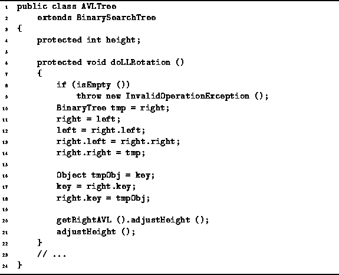
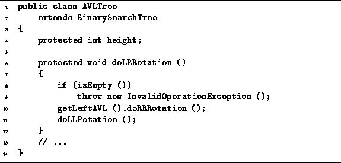
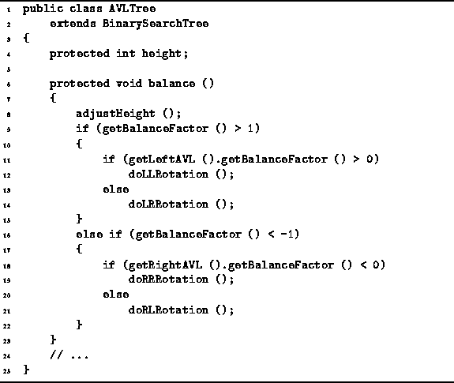
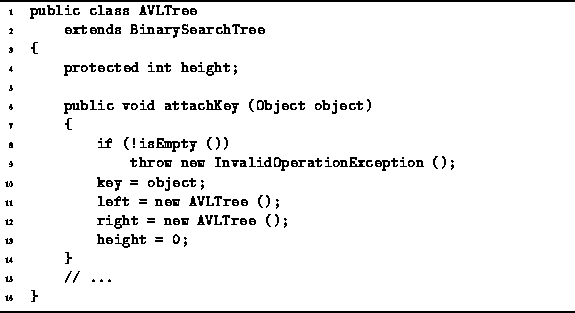

Data Structures and Algorithms
with Object-Oriented Design Patterns in Java
Data Structures and Algorithms
with Object-Oriented Design Patterns in Java
Program  gives the code for the doLLRotation
method of the AVLTree class.
This code implements the LL rotation shown in Figure .
The purpose of the doLLRotation method
is to perform an LL rotation at the root of a given AVL tree instance.
gives the code for the doLLRotation
method of the AVLTree class.
This code implements the LL rotation shown in Figure .
The purpose of the doLLRotation method
is to perform an LL rotation at the root of a given AVL tree instance.

Program: AVLTree class doLLRotation method.
The rotation is simply a sequence of variable manipulations followed by two height adjustments. Notice the rotation is done in such a way so that the the given AVLTree instance remains the root of the tree. This is done so that if the tree has a parent, it is not necessary to modify the contents of the parent.
The AVLTree class also requires an doRRRotation
method to implement an RR rotation.
The implementation of that method
follows directly from Program .
Clearly, the running time for the single rotations is O(1).
Program gives the implementation for the
doLRRotation method of the AVLTree class.
This double rotation is trivially implemented as a sequence of
two single rotations.
As above, the method for the complementary rotation
is easily derived from the given code.
The running time for each of the double rotation methods is also O(1).

Program: AVLTree class doLRRotation method.
When an imbalance is detected, it is necessary to correct the imbalance
by doing the appropriate rotation.
The code given in Program takes care of this.
The balance method tests for an imbalance by calling
the getBalanceFactor method.
The balance test itself takes constant time.
If the node is balanced, only a constant-time height adjustment is needed.

Program: AVLTree class balance method.
Otherwise, the balance method of the AVLTree class determines which of the four cases has occurred, and invokes the appropriate rotation to correct the imbalance. To determine which case has occurred, the balance method calls the getBalanceFactor method at most twice. Therefore, the time for selecting the case is constant. In all only one rotation is done to correct the imbalance. Therefore, the running time of this method is O(1).
The insert method for AVL trees is inherited from
the BinarySearchTree class (see Program ).
The insert method calls attachKey to do the actual insertion.
The attachKey method is overridden in the AVLTree class
as shown in Program .

Program: AVLTree class attachKey method.
The very last thing that the insert
method does is to call the balance method.
which has also been overridden as shown in Program .
As a result the insert method
adjusts the heights of the nodes along the insertion path
and does a rotation when an imbalance is detected.
Since the height of an AVL tree is guaranteed to be  ,
the time for insertion is simply
,
the time for insertion is simply  .
.
 Copyright © 1998 by Bruno R. Preiss, P.Eng. All rights reserved.
Copyright © 1998 by Bruno R. Preiss, P.Eng. All rights reserved.